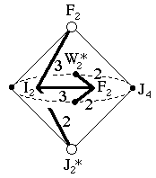
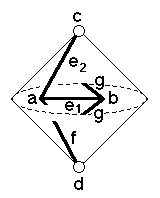

227
227
 229
229 Orbifold Atlas Home Page
Orbifold Atlas Home Page
 Crystallographic Topology Home Page
Crystallographic Topology Home Page
Underlying Topological Space: RP2 double suspension; Figure Pseudo-Symmetry (FPS): m
Euclidean 3-Orbifold with Invariant-Lattice-Complex Letters
(left), Wyckoff Site Letters (right)
 
| FPS | Mult | Lattice Comp | Group Graph | Wyckoff Set | 2[4]Cover |
| 16-1 | I2 | 332 | a | ||
| 32-1 | F2 | 322 | b | ||
| 32-1 | F2 | 30 | c | ||
| 48-1 | J*2 | 20 | d | ||
| 64-1 | I24[-]F22 | 32<3>22 | e1:a-b | ||
| 64-1 | I24[-]F22 | 32<3>0 | e2:a-c | ||
| 96-1 | I26[-]J*22 | 33<2>0 | f:a-d | ||
| 96-1 | F23[W*2]& | 32<2>& | g:b-b | ||
| 192 | 1 | h:efg | |||
| 192-1 | I212[J4]J*24 | 2*=332<1>20 | h1:a-d | [[#229(h)]] | |
| 192-1 | F26[J4]F26 | 2*=332<1>30 | h2:b-c | [[#225(e)]] | |
| 192-1 | J*24[-]W*22 | 2*=20<1>22 | h3:d-g | #224(h) | |
| m | 192-1 | m* | h4:efh1h2 | #224(k) | |
| Struct-Mult | Critical Points | Heegaard Surf | Wyckoff Cut |
| BCC -1 | I2/F2F2/W*2/J*2 | HP2 20{221} | (g1) (g2) |
227
229
Orbifold Atlas Home Page
Crystallographic Topology Home Page
Page last revised: